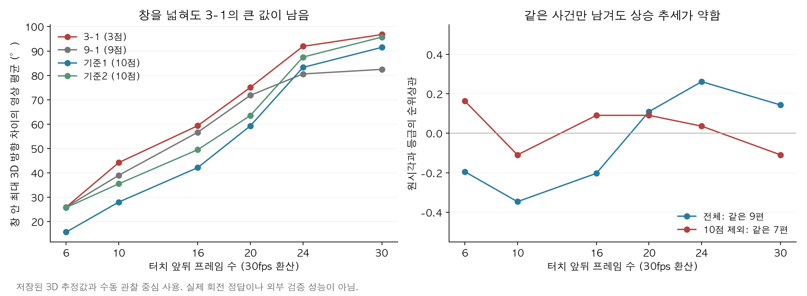
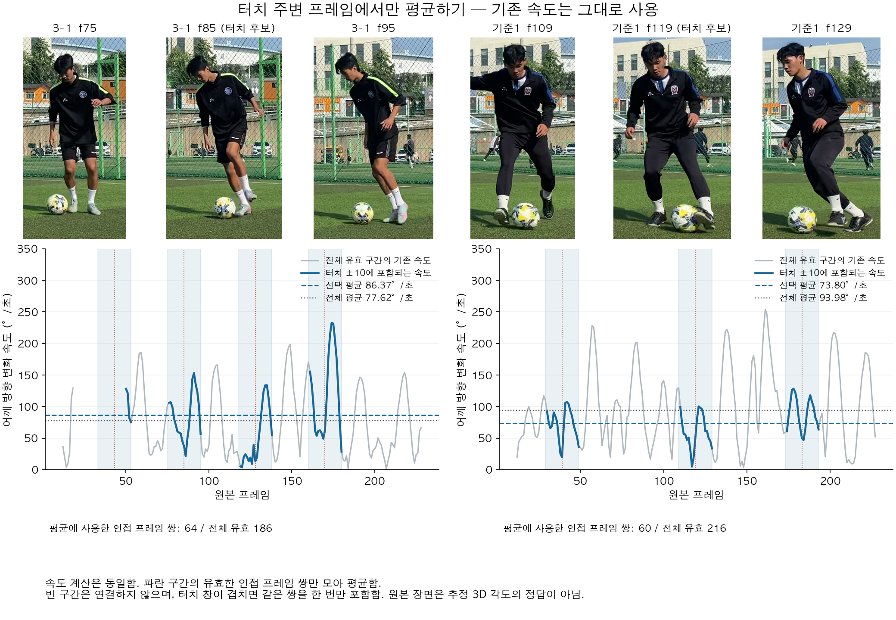
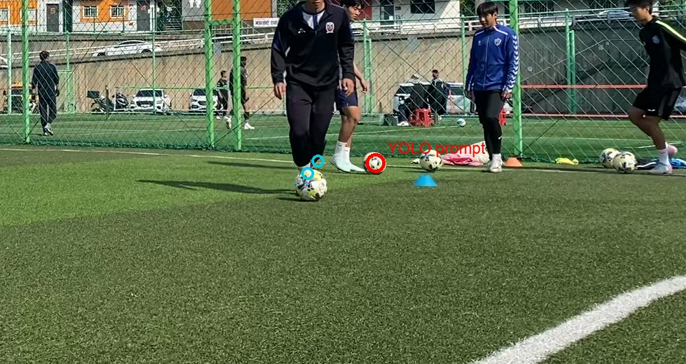

축구 드리블 동작 분석
좋은 드리블을 평가한다는 목표를, 설명 가능한 측정 기준으로 옮겼습니다.
프로젝트 한눈에 보기
AIV Lab
- 직접 담당
- 지표 설계, 터치 구간 실험, 분석 파이프라인 구현·검수
- 종료 후 재검증
- 2026.10 · 3개 영상 × 5회
- 확인 범위
- 같은 CPU 조건에서 좌표·지표·점수 일치
- 사용 기술
- PythonMediaPipeYOLOSAM2NumPy
01 · 문제 정의
“많이 움직였다”는 수치가 “잘했다”는 평가는 아니었습니다.

단안 영상에서 자세를 추정하는 것보다 어려운 문제는 무엇을 측정해야 평가 의도를 설명할 수 있는지 정하는 일이었습니다. 어깨의 최대 방향 차이는 낮은 등급 영상에서도 크게 나왔고, 점수 가중치나 상한을 바꿔도 원시값의 순서가 바뀌지는 않았습니다.
저는 교수님 피드백을 계산 정의로 구체화하고 원본·관절·공 궤적·지표를 함께 볼 수 있는 분석 흐름을 구현했습니다. 프로젝트는 2026.06 완료했고, 이 페이지의 9~11월 비교·재실행 자료는 종료 후 연구 검토입니다.
02 · 측정 기준 재정의
움직임의 크기와 속도를 나누고, 평가할 시간 구간을 맞췄습니다.

최대각 후보와 인접 프레임의 평균 방향 변화 속도를 분리해 비교했습니다. 터치 앞뒤 ±6·10·16·20·24·30프레임을 검토한 뒤, 교수님의 평가 의도에 맞춰 기존 프레임별 속도를 유지하면서 터치 주변 값만 평균하도록 정리했습니다.
최종 ±16은 헤드업과 시간 범위를 맞춘 선택입니다. 겹치는 프레임 쌍은 한 번만 집계하고, 결측을 건너뛰어 멀리 떨어진 두 프레임을 연결하지 않았습니다. 필요한 항목이 없으면 총점을 N/A로 남겼습니다.
측정 대상·시간 범위·결측 처리 규칙을 명시했습니다. 등급 구분 성능의 일관된 개선이나 최적 윈도우를 찾았다는 결과는 얻지 못했습니다.
전체 전문가 등급을 특정 관절 지표의 정답으로 취급하지 않게 됐습니다. 원하는 점수에 맞추기 전에, 그 숫자가 어떤 동작을 측정하는지부터 설명해야 했습니다.
03 · 입력 오류 추적
공 하나를 잘못 고르면, 평가할 순간도 달라집니다.
기본 경로는 MediaPipe의 관절 추정과 YOLOv8n 초기 검출·SAM2.1 추적을 연결합니다. 배경 공이 초기 대상으로 선택되면 터치 후보와 자세를 집계하는 시간까지 영향을 받아, 공 좌표를 원본 위에 겹쳐 확인했습니다.
발목 근접 선택·재탐색과 별도 YOLO11 발목 ROI 재검출을 비교했습니다. 근접 조건을 만족하는 배경 공도 있어 완전한 해결에는 이르지 못했습니다. 최종 점수만으로는 드러나지 않는 오류를 입력 단계에서 확인할 수 있도록 결과를 남겼습니다.
검출 결과가 존재하는지, 올바른 대상을 고른 것인지, 그 결과로 계산한 지표가 타당한지는 각각 다른 질문이었습니다. 검수를 이 세 단계로 나누게 됐습니다.
04 · 후속 검증
같은 결과가 반복돼도, 같은 오류가 반복될 수 있습니다.

종료 후 논문 리뷰에 대응해 3개 영상을 각각 5회, 같은 CLI·CPU 조건에서 원본부터 다시 분석했습니다. 관절 배열·공 궤적·터치 프레임·원시 지표·점수는 반복 간 일치했습니다. 저장 결과 771프레임의 재집계도 별도 계산과 1e−10 이내로 맞았습니다.
그러나 11월 검토에서는 잘못된 초기 공 선택도 확인됐습니다. 반복 일치와 측정 정확성을 분리하고, 원본 장면에서 대상이 맞는지 확인해야 한다는 한계를 함께 기록했습니다.
05 · 배운 점
숫자를 조정하기 전에, 문제의 정의를 다시 봅니다.
가중치 조정에 앞서 측정 대상·시간 범위·입력 품질을 분리했습니다. 이 과정을 통해 결과가 기대와 다를 때 마지막 점수만 만지는 대신, 정의 → 입력 → 계산 → 해석 순서로 원인을 좁히는 방법을 익혔습니다.
코드와 근거
구현과 판단의 근거를 함께 남깁니다.
Python / MediaPipe / YOLO / SAM2 / NumPy / SciPy
2026.11.03 검토 · 개인 기여와 팀 성과, 완료한 실험과 진행 중인 연구를 구분했습니다.